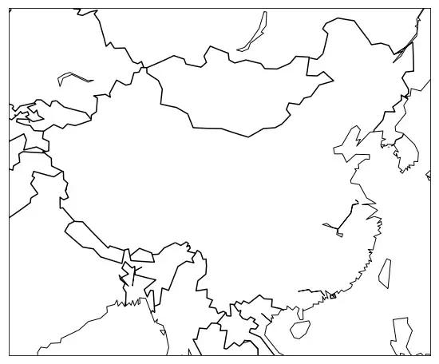
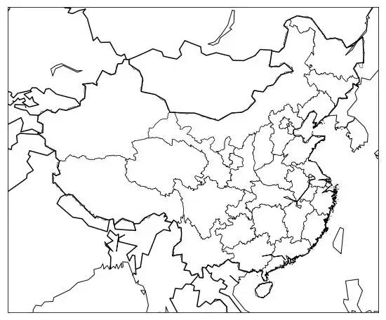

如何用Python画一个中国地图？
https://jupyter.org/index.html
先来聊聊为什么做数据分析一定要用 Python或 R语言。编程语言这么多种， Java, PHP都很成熟，但是为什么在最近热火的数据分析领域，很多人选择用 Python语言？
数据分析只是一个需求，理论上来讲，任何语言都可以满足任何需求，只是麻烦与简易之别。 Python这门语言诞生也相当之早，它的第一个版本是 26年前发表的，曾经（或者说当前）也被用于web开发，但是就流行程度来说，远远干不过 Java和 PHP。东方不亮西方亮，在与 Java干仗失败的这20几年时光里， Python练就了一身独门武艺，是 Java和 PHP远远不及的（当然以后是不是能追得上来，目前还不好说）。你要说做个博客网站， Python的特长不在这里， PHP和 Java也是分分钟的事情。你要说做个 BBS网站，做个电商网站， PHP手到擒来。 Python在这些方面和 Java或者 PHP竞争，基本就是作死的节奏，虽然也有 django这样的框架，但流行程度远远不及其他语言。但在这些年默默的失败背后，有一帮研究人员用 Python干出了一些惊天地泣鬼神的神器，使 Python在数据研究领域做到了除了 R语言以外基本无人能及的地步。
>>>>Jupyter
首先，第一神器是 Jupyter。如果你是第一次使用，可能搞不清楚它的开发者做这么个鬼东西出来干什么，说它是博客系统也不像，说它是web服务器也不像，但它就是有用。因为我们传统的web开发首先想的就是面向公众，你做一个服务器就是要服务成千上万浏览器的，当然 Jupyter也可以服务众多浏览器，但它更多的还是方便研究人员，对研究人员来说简直是太方便了，你把代码像写文章一样直接写在输入框里，然后在本页面直接就看到了这个代码的结果，随时修改，随时展现，文码混排，是 Markdown的一个增强版，毕竟 Markdown还只能显示文字，最多再加上一些图片，而 Jupyter是可以直接运行 Python代码的。当然，也有些人试图在 Jupyter里运行 PHP或 Java代码，但显然成不了气候。因为 Python这个语言天生就是脚本语言，可能将来唯一有希望往里移植的就是 Javascript，这货也是一个脚本语言。
脚本语言的好处就是不用编译，一行一个结果。纵观计算机语言发展历史，就是一个从繁到简的过程，C语言需要编译+链接才能运行， Java只要 javac一下，把编译和链接合二为一， PHP更简单，直接运行就行了，连编译都省了。但是还不够直接，因为还要编写一个 .php文件存盘，然后才能运行，到了 Python以及其它脚本语言这里，可以直接在壳里运行，但最大的问题是运行可以运行，无法保存，要保存就又要跟传统方式一样，找个编辑器来，或者 vi，存成文件以后才可以运行。
Jupyter最大的优点就是：它本身还是一个外壳环境，可以运行脚本，但同时也帮你自动把这些脚本代码保存了下来，不但保存脚本代码，并且你插在脚本代码当中的所有注释不是普通注释，而是各种格式化的 Markdown都一并帮你保存下来，并且可以随时修改。所以它兼具了脚本外壳和文件管理系统的优点，从此你开发 Python代码再也不用先在IDE里写好代码，然后再到终端里去运行，而直接在一个 web页面上就全部搞定了。 Java有这样的工具吗？ PHP有这样的工具吗？没有，所以我们必须选择 Python。
>>>>Pandas
第二神器是 Pandas。如果我让你读取一个 csv文件，然后求每一列数据的平均值，最大值，最小值，方差，用 Java或 PHP怎么做？你首先要 fopen一个文件，然后一行一行读进来，再给它整个数据结构，然后弄个循环计算，最后你可能还要 fclose这个文件。总之代码一坨，麻烦死。而 Python语言因为有 Pandas这个神器，一行代码搞定：
df = pd.read_csv('a.csv')
行了，从此以后， df就是这个 DataFrame，它本身就是一个强大的数据结构，也可以把它理解成 mysql数据库中的一张表吧，各种增删改查，求总和，求平均都是一行代码的事情。所以有这样强大的库，研究人员有什么理由选择 Java？
>>>>scikit-learn
第三神器 scikit-learn，一般缩写为 sclearn，各种机器学习算法，基本上只要你能想得到的，线性回归，逻辑回归，SVM，随机森林，最近邻居等等等等，各种算法全部在这里面，简而言之，只有你想不到，没有它做不到，不详述。所以这就是为什么玩机器学习必选 Python的原因，你给我找一个 Java或者 PHP有这样多种算法的库来？
>>>>matplotlib
第四神器是 matplotlib。如果我让你根据上面 csv文件里的信息，画一个图，用 Java该怎么做？你当然会去找第三方插件库，然后又是一通折腾，终于把图做出来，然后编译，然后运行。如果我要改配色呢？如果我要求画地图呢？如果要画热力图呢？那个麻烦就不是一星半点，而对于 matplotlib来说，简直就是小菜一碟。简单的直方图就不说了，下面重点介绍如何用 matplotlib配合 Basemap画一个中国地图。
安装Basemap
先安装相应的组件。我假定你已经都安装好了 Python以及 Jupyter等等。如果没有安装的话，就去尝试一下 brew install python3和 brew install jupyter吧，网上有很多教程。
然后你需要用 pip3 install很多我们下面可能需要用到的库。但是因为我们要用一个叫做 Basemap的库，而这个库没有办法用简单的 pip3 install安装，所以稍多两个步骤：
brew install geos pip3 install https://github.com/matplotlib/basemap/archive/v1.1.0.tar.gz
开始画图
启动 Jupyter之后，我们还是本着从最简单的代码开始。先画一个世界地图：
import matplotlib.pyplot as plt from mpl_toolkits.basemap import Basemap plt.figure(figsize=(16,8)) m = Basemap() m.drawcoastlines() plt.show()
前面两行引入相应的库，真正的代码就4行，够简单吧。第1行甚至可以不写，它定义了图的大小。第2行我们创建一个地图，第3行把海岸线画上，第4行显示这个地图，就是这样：
m.drawcountries(linewidth=1.5)
你用 Java的 4行代码画一个地图出来？
然后我们开始画上国家，又是1行代码：
m = Basemap(llcrnrlon=73, llcrnrlat=18, urcrnrlon=135, urcrnrlat=53)
就变成了这样：
m = Basemap(llcrnrlon=77, llcrnrlat=14, urcrnrlon=140, urcrnrlat=51, projection='lcc', lat_1=33, lat_2=45, lon_0=100)
用 Java可能吗？用 PHP可能吗？
如果我们想显示中国地图，只需要在创建 Basemap时指定一下经纬度就行了：
import matplotlib.pyplot as plt from mpl_toolkits.basemap import Basemap from matplotlib.patches import Polygon from matplotlib.colors import rgb2hex plt.figure(figsize=(16,8)) m = Basemap( llcrnrlon=77, llcrnrlat=14, urcrnrlon=140, urcrnrlat=51, projection='lcc', lat_1=33, lat_2=45, lon_0=100 ) m.drawcountries(linewidth=1.5) m.drawcoastlines() plt.show()
然后就得到了中国地图：

我们想加上省的边界怎么办呢？Basemap缺省的包里没有中国的省区，只有美国的州，毕竟是美国人做的嘛。不过好在世界很大，有专门的国际组织干这事，在https://gadm.org/download_country_v3.html 你可以下载全世界任何一个国家的行政区划Shape文件：
下载到一个压缩文件：gadm36_CHN_shp，解压缩。
主要是利用里面的AutoCAD 形源代码 (.shp)文件。
再添加一行代码：
m.readshapefile('gadm36_CHN_shp/gadm36_CHN_1', 'states', drawbounds=True)
然后就得到了下图：
然后就得到了下图：

再往后，你还可以往图上改颜色啦，写数字啦，这些就留待你研究吧。总之，我想说的是，用 Python画地图真的超容易。
最后再为 Java和 PHP美言几句：大家分工不同， Java和 PHP虽然做这样的数字研究不是很方便，但还是非常适合 web开发的，而 Python在这方面并不适合。所以通常的做法是：首先用 Python验证算法，经过一系列复杂的计算，把算法确定下来之后，当要应用到 web上的时候，再用 Java或者 PHP把最终形成的结论重写一遍，这样就能充分利用各种语言的优势。